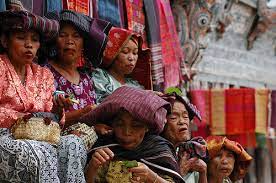

Sumatra
Nusa Tenggara
Maluku
Papua
Kepulauan Riau
Kepulauan Riau (disingkat Kepri) adalah sebuah wilayah provinsi yang terletak di Indonesia. Ibu kota Provinsi Kepulauan Riau ini adalah Kota Tanjungpinang. Provinsi ini berbatasan langsung dengan Vietnam dan Kamboja di sebelah Utara; Malaysia dan provinsi Kalimantan Barat di sebelah Timur; provinsi Kepulauan Bangka Belitung dan Jambi di Selatan; negara Singapura, Malaysia dan provinsi Riau di sebelah Barat. Provinsi ini termasuk provinsi kepulauan di Indonesia. Tahun 2020, penduduk Kepulauan Riau berjumlah 2.064.564 jiwa, dengan kepadatan 252 jiwa/km2, dan 58% penduduknya berada di kota Batam.
Informasi Umum
| Nama Provinsi | Kode Wilayah | Kode Internasional | Singkatan Umum | Ibu Kota | Hari Libur | Lambang |
|---|---|---|---|---|---|---|
| Kepualauan Riau | 21 | ID-KR | Kepri | Tanjungpinang | 24 September 2002 |
Budaya
Rumah Belah Bubung adalah rumah adat dari kepulauan Riau yang berada di Indonesia. Rumah Belah Bubung juga dikenal dengan nama rumah rabung atau rumah bubung melayu. Rumah Belah Bubung memiliki model rumah yang sama dengan rumah panggung. Rumah ini memiliki tinggi 2 meter dari tanah dan ditopang oleh beberapa tiang penyangga. Rumah ini memiliki atap yang berbentuk seperti pelana kuda. Rumah induk terbagi menjadi 4 bagian yaitu selasar, ruang induk, ruang penghubung dapur, dan dapur. Proses pembangunan rumah pun tidak sembarangan karena harus melalui beberapa tahap yang dipercaya menghindari pemilik rumah dari kesialan. Semakin besar ukuran rumah ini memperlihatkan bahwa kemampuan ekonomi dari pemilik rumah adalah menengah ke atas, tetapi semakin kecil rumah ini menunjukkan bahwa ekonomi pemilik rumah menengah ke bawah.

Tari Zapin merupakan tarian yang berasal dari negeri Yaman yang populer dalam kalangan masyarakat Melayu di Indonesia, terutama di wilayah yang bermayoritas Melayu seperti di Kepulauan Riau. Zapin diyakini masuk ke wilayah Nusantara dipengaruhi oleh orang-orang Persia dan Arab yang berakulturasi dengan kebudayaan Melayu lokal dalam menyebarkan ajaran Islam dari Timur Tengah pada sekitar abad keempat belas. Dahulu, tarian ini hanya dilakukan untuk upacara keagamaan tetapi selama bertahun-tahun tarian itu telah berkembang menjadi suatu bentuk hiburan tradisional bagi masyarakat Melayu.
Bahasa daerah yang ada Provinsi Kepulauan Riau adalah bahasa Melayu Riau yang digunakan masyarakat seluruh Provinsi Riau dalam kehidupan sehari-hari, yang sudah menjadi ciri khas masyarakat Kepulauan Riau. Bahasa melayu Riau ini digadang sebagai cikal bakal bahasa Indonesia, sehingga terkadang terdengar sangat mirip dengan bahasa Indonesia baku. Pemilihan bahasa melayu Riau sebagai akar bahasa Indonesia sesuai dengan kebijakan pemerintah Kolonial Belanda

Tari makan sirih (Persembahan) adalah salah satu tarian tradisional atau tarian klasik riau (melayu) yang umumnya dipentaskan untuk menyambut dan dipersembahkan untuk menghormati tamu negara / tamu agung yang datang. Saat pertunjukan, salah satu penari dalam tari persembahan akan membawa kotak yang berisi sirih. Sirih dalam kotak tersebut kemudian dibuka dan tamu yang dianggap agung diberi kesempatan pertama untuk mengambilnya sebagai bentuk penghormatan, kemudian diikuti oleh tamu yang lain. Karenanya, banyak orang yang menyebut tari persembahan Riau dengan sebutan tari sekapur sirih.
Badik tumbuk lada merupakan senjata khas Kepulauan Riau. Bentuknya seperti keris namun lebih pendek. Badik tumbuk lada terbuat dari besi dan baja dan memiliki sarung penutup yang terbuat dari kayu dengan lapisan emas atau perak.
Kepulauan Riau kaya akan beragam kebudayaan yang terjaga hingga kini. Salah satunya, yakni lagu daerah. Salah satu lagu daerah Kepulauan Riau yaitu Segantang Lada. Lagu daerah ini sendiri mengisahkan seorang gadis yang merindukan kekasihnya. Sebenarnya, lagu ini menggambarkan kecintaan terhadap tanah Riau. Karena, Segantang Lada adalah julukan bagi daerah Provinsi Riau.
Kuliner
Selais Asap. ikan selais yang merupakan makanan khas Kepulauan Riau yang mana ikan ini diasap dalam waktu yang cukup lama hingga ikan kering. Penyajiannya, ikan selais asap dimasak kembali menggunakan rempah-rempah khas Kepulauan Riau dan dihidangkan bersama petai yang membuat selera makan menjadi nikmat.

Destinasi Wisata
Selais Asap. ikan selais yang merupakan makanan khas Kepulauan Riau yang mana ikan ini diasap dalam waktu yang cukup lama hingga ikan kering. Penyajiannya, ikan selais asap dimasak kembali menggunakan rempah-rempah khas Kepulauan Riau dan dihidangkan bersama petai yang membuat selera makan menjadi nikmat.